The Problem
Booking a live event takes three or four apps
Business goal: increase the frequency of orders in live-event bookings on District by Zomato by making discovery and booking dramatically better for the people most likely to book often.
User problem: live entertainment is growing fast, but the path from "I'd like to do something this weekend" to "I've booked it" is fragmented. Users bounce between discovery (Instagram, friends), booking (BookMyShow), and on-the-day logistics (maps, food). Every hand-off is a drop-off — and a missed booking.
Why it matters: District sits inside the Zomato ecosystem, which already owns dining intent and location data — an advantage no ticketing app has. If discovery and booking felt personal and social, District could turn one-off ticket buyers into repeat bookers.
Competitive Research
Benchmarking against BookMyShow
I mapped both digital alternatives (BookMyShow, Swiggy Scenes, Meetup, Eventbrite, Nearbuy, Facebook Events) and physical ones (venues running their own nights, community centres, local organisers), then narrowed to the benchmark with the richest public footprint: BookMyShow, the dominant event-ticketing player in India.
I walked both apps screen by screen and ran teardown tools (Wayback Machine, SimilarWeb, ad libraries, company blogs) to surface what BookMyShow solves that District doesn't.
The insight
The biggest lever wasn't features District was missing one-by-one; it was the absence of a personalised discovery experience. That reframed the whole project.
- Enhanced event discovery & personalisation — recommendations and quick filters cut the effort of finding relevant events
- Comprehensive event insights — descriptions, venue info, seating charts, and reviews to decide with confidence
- Flexible booking & payment — promo codes, cashback, and multiple payment rails for different budgets
- Post-booking convenience — reminders, calendar sync, cancellation policies that add value beyond the ticket
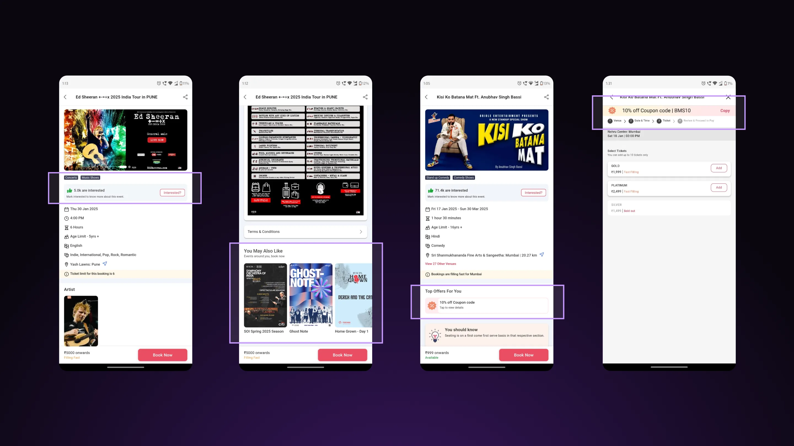
Screen-by-screen teardown of BookMyShow against District's events flow
Annotated comparison across four moments: personalised recommendations, seating charts, promo/coupon flow, and post-booking.
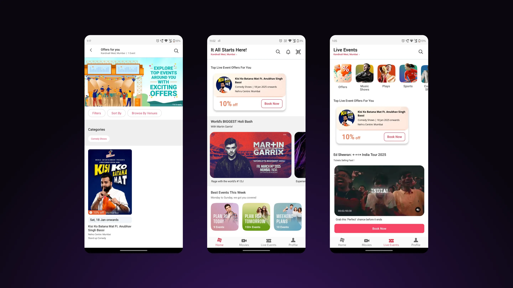
The clearest gap: District lacked a personalised discovery layer
BookMyShow surfaces "Offers for you," "Top live event offers," and "Live events" as personalised, ranked surfaces — District showed the same list to everyone.
User Research
8 interviews, one clear pattern
I recruited 8 users across genders, age bands (15–45), cities (Bhubaneswar, Delhi, Mumbai, Bangalore, Hyderabad, Kolkata), and levels of event-going experience — deliberately spanning demographics rather than a single archetype.
I ran semi-structured interviews against a 17-question guide covering leisure habits, how they discover events, who they go with, how they book, and their experience of District specifically. Then I summarised every conversation, grouped it into themes, and quantified the pain.
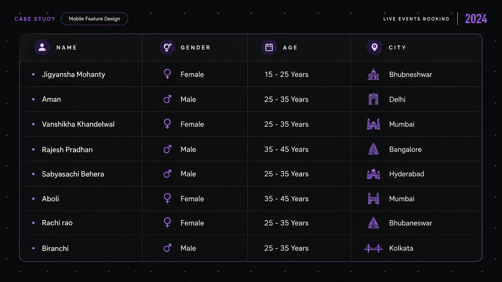
8 participants across cities, ages, and event-going habits
Recruited deliberately across demographics — name, gender, age, and city — rather than a single archetype, to stress-test whether the pain was universal or niche.
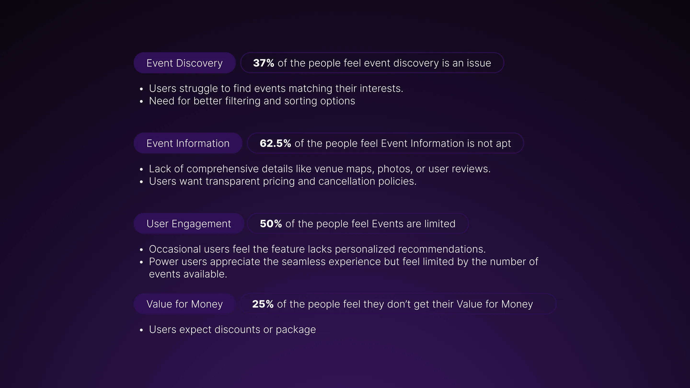
Four themes, quantified across the sample
Every transcript was grouped into four themes — Event Discovery, Event Information, User Engagement, Value for Money — then quantified so the loudest complaint could be checked against the data, not just intuition.
Synthesis
Pains, gains, and jobs — traced back to the metric
I distilled the research into a pains/gains/jobs model and traced each item back to the booking-frequency metric.
The insight
Prioritised segment: Young Professionals (22–35, metro cities). A large slice of Zomato's active base, already using it for dining, spending moderately on experiences, going in small groups, deciding on peer recommendations, and responding to personalised, bundled offers — the users most able to increase booking frequency.
Mapping the Opportunity
Seven moments, one bet
I built a journey map for the segment across six stages — Awareness → Consideration → Decision → Booking → Event → Post-Event — capturing what the user does and needs at each.
From the journey I pulled seven distinct moments in time, and for each I wrote the user's top-level "I want…" statement, then broke each into sub-needs. That became an opportunity tree hung off the single business metric.
The insight
I prioritised Exploring Event Details. Rationale: it's where users spend the most decision time, where competitors under-invest (they optimise listing, not the detail page), and where Zomato's discovery muscle and dining data give District a real edge. Fix this moment and you directly lift conversion.
- Discovering an event — "I want to find exciting events that match my interests"
- Exploring event details — "I need enough info to decide if this is worth attending"
- Deciding to book — "I want to be confident before I pay"
- Completing the booking — "I want an easy, hassle-free booking"
- Preparing for the event — "I want to plan my visit efficiently"
- Attending the event — "I want a seamless, enjoyable experience at the venue"
- Post-event — "I want to share my experience and find more like it"
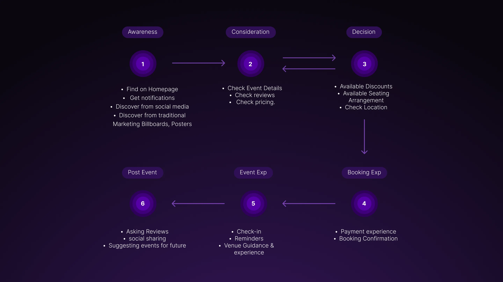
The young-professional booking journey, end to end
Six stages, mapped with what the user does and needs at each — the backbone the opportunity tree was built from.
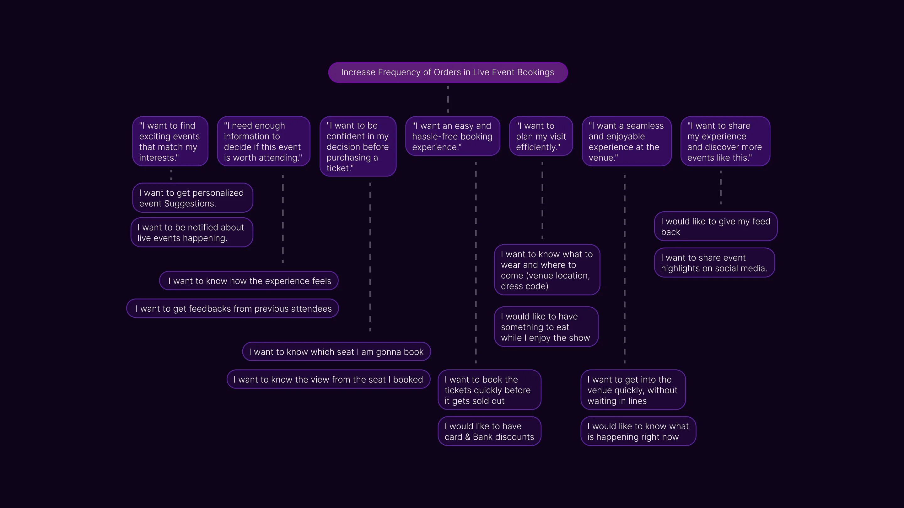
Seven moments, each with the jobs that could move the metric
Rooted in "Increase frequency of orders in live event bookings," branching into all seven journey moments and their sub-needs — the map that led to betting on Exploring Event Details.
Ideation
Three concepts for Exploring Event Details
For the chosen opportunity I generated three solution directions and story-mapped each so the flow was unambiguous.
Interactive & Personalised Event Details Page
Auto-generated takeaways ("90% of attendees loved the vibe"), "people like you also booked this," and a "grab a meal before the event" nudge that leans on Zomato's restaurant graph.
Social Proof & Real-Time Engagement
Live reviews and media from the venue, a friends-attending feature, and an event popularity meter ("500+ booked in the last hour").
Event Q&A & Community Forum
User-generated Q&A, moderator-verified answers, and pre-event threads to coordinate meetups and carpools.
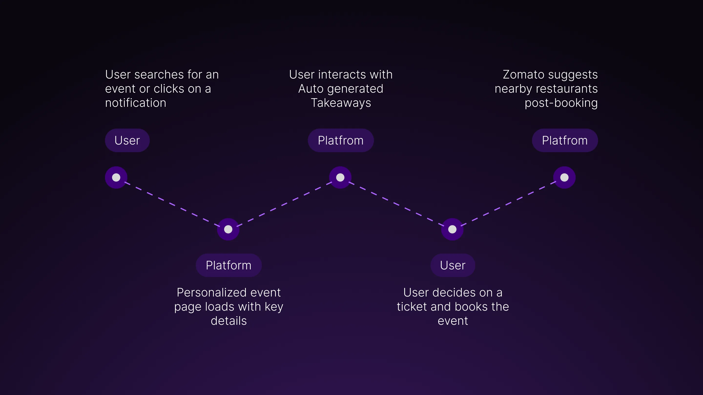
Concept 1 — a personalised, insight-rich detail page
Story-mapped as a user/platform swim-lane to make the flow from landing to decision unambiguous before any UI was drawn.
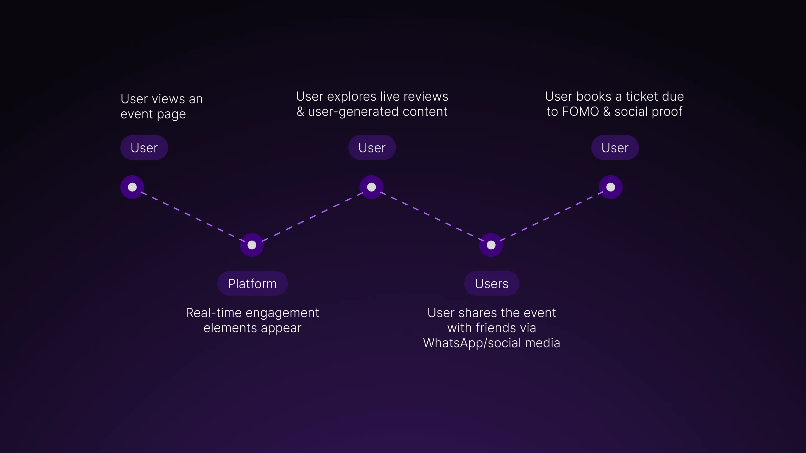
Concept 2 — FOMO, live reviews, friends attending
Mapped the moments where real-time social signals — who's going, what people are saying right now — could intercept hesitation.
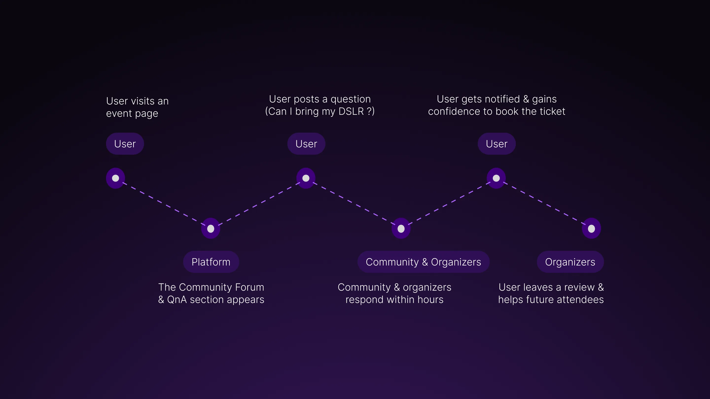
Concept 3 — a community layer that answers pre-booking questions
Mapped how a Q&A thread could resolve the situational questions a static description never anticipates.
Narrowing Down
MoSCoW: two Must-Haves, one supporting layer
The Interactive Detail Page and the Q&A/Community layer both scored Must-Have — they remove uncertainty at the exact moment users decide, and they reuse District's existing recommendation and filtering logic for a fast rollout. Social proof landed as a strong Should-Have and folded into the winning direction as a supporting layer.
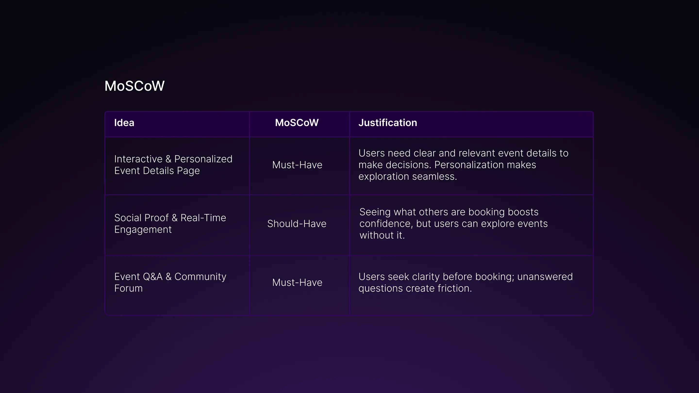
Prioritising against user expectation and feasibility
Each idea scored against user expectation, business value, and build feasibility — the table that turned three concepts into one shippable direction.
Wireframing
Breadboard first, then rough screens
I breadboarded the winning idea end to end first — mapping every place, affordance, and connection before drawing a single pixel. Then rough wireframes to pressure-test the two hero interactions: the live chat/community layer and the social insights (friends & crowd attending) layer.
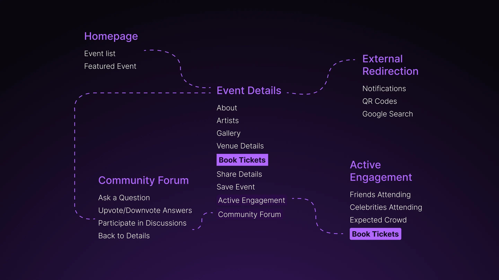
Breadboarding the flow before committing to UI
Covers Homepage, Event Details, Active Engagement, Community Forum, and External Redirection — every place and connection mapped before any visual design.
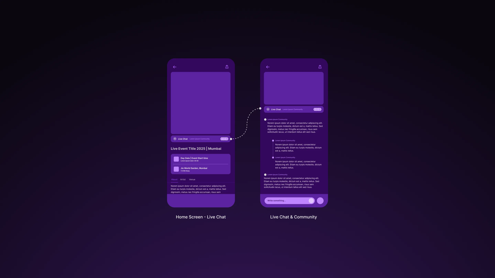
Rough wireframes — bringing a live community onto the event page
Grey-box pass on Home Screen (Live Chat entry point) and the expanded Live Chat & Community screen.
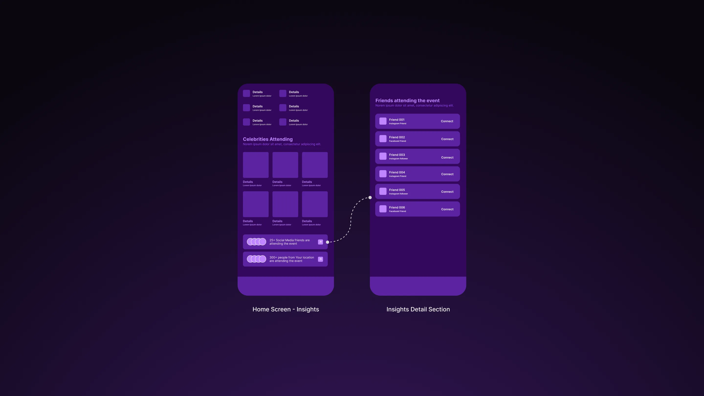
Rough wireframes — friends and locals attending, as social proof
Grey-box pass on the Home Screen (Insights entry point) and the Insights Detail section.
The Solution
An interactive, personalised event detail page with a live social layer
It leans on AI-driven recommendations, real-time engagement, and Zomato's dining and location data to make the deciding moment effortless and confident.
Personalised event discovery
Recommendations from preferences, past bookings, and browsing; segmented into trending, nearby, and exclusive deals.
Rich detail page
Full venue info, reviews and photos, live ratings, and an Event Q&A/community forum.
Social proof & engagement
Friends-attending, a live popularity meter, celebrities attending, and shareable highlights.
Seamless booking
Multiple payment options with card/bank discounts, and an easy refund/cancellation path.
Post-event loop
Feedback capture that feeds the next round of recommendations.
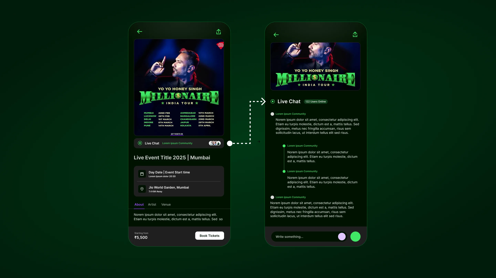
The event detail page, with a live community reading the room in real time
The event detail page with a Live Chat pill, expanding into a full thread showing "122 users online" — organisers and attendees answering questions as they come in.
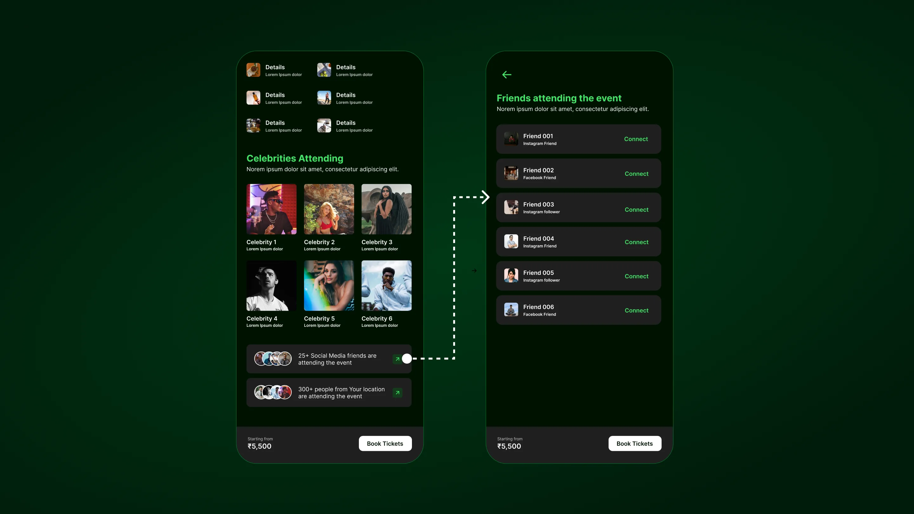
Who else is going — celebrities, friends, and people near you
A celebrities-attending grid alongside a friends-attending list with Connect CTAs — turning peer trust into a visible, actionable signal at the point of decision.
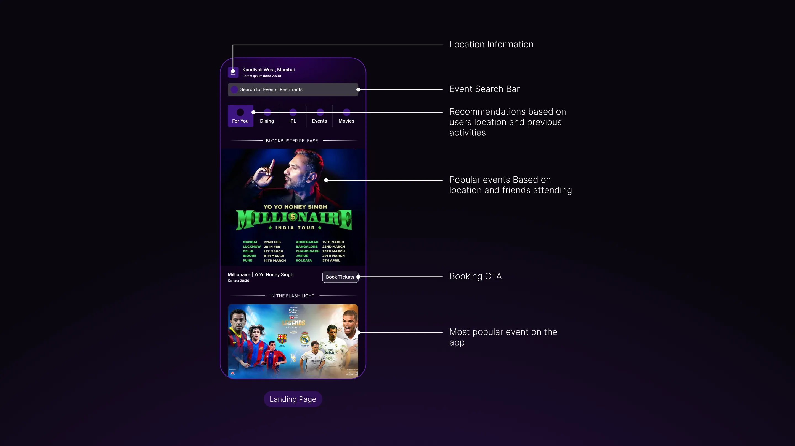
Landing page — location-aware, personalised, built for discovery
Annotated: location and search up top, personalised rows beneath, popular/most-popular sections, and the booking CTA kept reachable throughout.
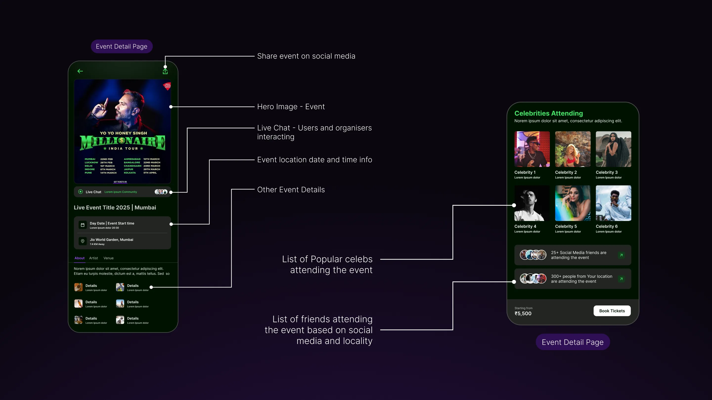
Event detail — everything needed to decide, in one scroll
Annotated: share action, hero image, live chat entry, location/time, and celebrities & friends attending — sequenced in the order a user actually decides.
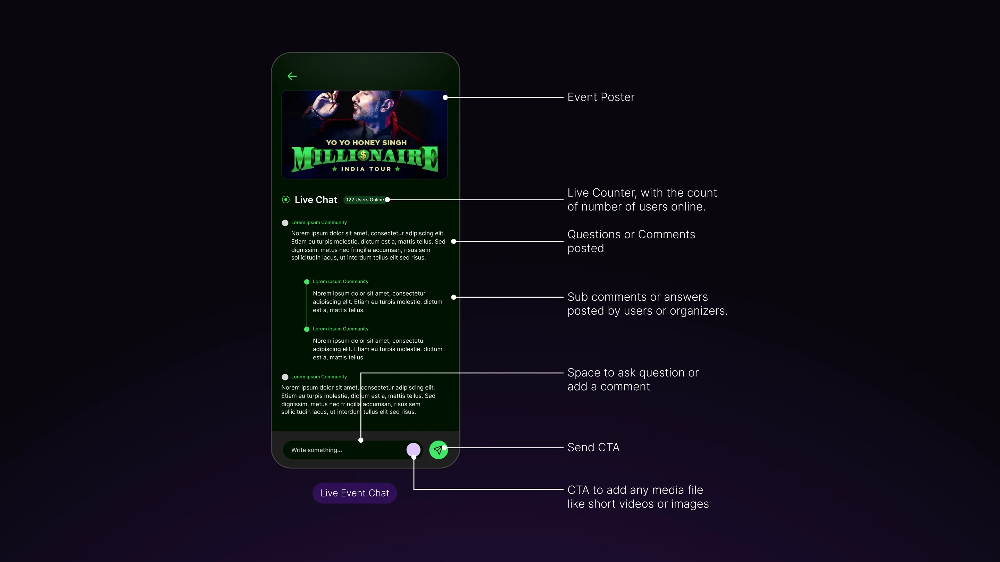
Live chat — organisers and attendees, answering in real time
Annotated: live viewer counter, threaded comments and sub-comments, compose bar, and a media attachment CTA.
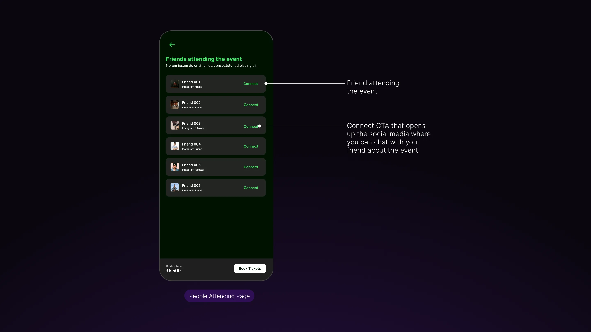
Connect with friends already going — social pull into the booking
Annotated: friend rows with mutual context and a direct Connect CTA to coordinate before booking.
Rollout & Risk
A phased launch, planned for what could go wrong
Phased launch: beta to 5–10% of metro users (Month 1–2) → enhancement and A/B testing at 30–40% (Month 3–4) → full launch with marketing (Month 5) → optimise and expand partnerships (Month 6+).
Risks planned for: thin event inventory (mitigated with organiser partnerships), payment drop-off (retries, alternative rails, support), and security (encryption, 2FA, monitoring). Edge cases considered: first-time users with no history, payment failures, cancellations, and non-metro/pin-code users.
Measuring Success
Instrumented before it shipped, not after
I defined the analytics up front so the feature could prove itself. I specified a full event-tracking spec across three phases — Discovery & Exploration, Social Engagement, and Event Experience — each event with its trigger, event properties, and user properties (e.g. event_viewed, event_filtered, friends_attending_viewed, event_checkin_completed, event_feedback_submitted).
What I Took Away
Three things I'd carry into the next project
- The metric is the compass — anchoring every pain, gain, and idea to booking frequency stopped the project sprawling into a feature wishlist
- Prioritising a moment beats prioritising a feature — betting on "Exploring Event Details" gave the whole solution a spine
- Use the ecosystem you're in — District's edge was never going to be out-listing BookMyShow; it was dining data, location, and social graph, and the solution leans hard on that